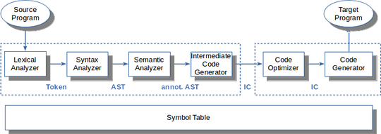

Struktur eines Compilers
TL;DR
Compiler übersetzen (formalen) Text in ein anderes Format.
Typischerweise kann man diesen Prozess in verschiedene Stufen/Phasen einteilen. Dabei verarbeitet jede Phase den Output der vorangegangenen Phase und erzeugt ein (kompakteres) Ergebnis, welches an die nächste Phase weitergereicht wird. Dabei nimmt die Abstraktion von Stufe zu Stufe zu: Der ursprüngliche Input ist ein Strom von Zeichen, daraus wird ein Strom von Wörtern (Token), daraus ein Baum (Parse Tree), Zwischencode (IC), …

Die gezeigten Phasen werden traditionell unterschieden. Je nach Aufgabe können verschiedene Stufen zusammengefasst werden oder sogar gar nicht auftreten.
Videos (YouTube)
Videos (FH-Medienportal)
Lernziele
Verstehen (K2)
- Struktur eines Compilers: Phasen und deren Aufgaben
Sprachen verstehen, Texte transformieren
The cat runs quickly.
=> Struktur? Bedeutung?
Wir können hier (mit steigender Abstraktionsstufe) unterscheiden:
-
Sequenz von Zeichen
-
Wörter: Zeichenketten mit bestimmten Buchstaben, getrennt durch bestimmte andere Zeichen; Wörter könnten im Wörterbuch nachgeschlagen werden
-
Sätze: Anordnung von Wörtern nach einer bestimmten Grammatik, Grenze: Satzzeichen
Hier (vereinfacht): Ein Satz besteht aus Subjekt und Prädikat. Das Subjekt besteht aus einem oder keinen Artikel und einem Substantiv. Das Prädikat besteht aus einem Verb und einem oder keinem Adverb.
-
Sprache: Die Menge der in einer Grammatik erlaubten Sätze
Compiler: Big Picture

Quelle: "A Map of the Territory (mountain.png)" by Bob Nystrom, licensed under MIT
{kind=link}
Begriffe und Phasen
Die obige Bergsteige-Metapher kann man in ein nüchternes Ablaufdiagramm mit verschiedenen Stufen und den zwischen den Stufen ausgetauschten Artefakten übersetzen:
Frontend, Analyse
Die ersten Stufen eines Compilers, die mit der Analyse des Inputs beschäftigt sind. Dies sind in der Regel der Scanner, der Parser und die semantische Analyse.
-
Scanner, Lexer, Tokenizer, Lexikalische Analyse
Zerteilt den Zeichenstrom in eine Folge von Wörtern. Mit regulären Ausdrücken kann definiert werden, was Klassen gültiger Wörter ("Token") sind. Ein Token hat i.d.R. einen Namen und einen Wert.
-
Parser, Syntaxanalyse
Der Parser erhält als Eingabe die Folge der Token und versucht mit Hilfe einer Grammatik zu bestimmen, ob es sich bei der Tokensequenz um gültige Sätze im Sinne der Grammatik handelt. Hier gibt es viele Algorithmen, die im Wesentlichen in die Klassen "top-down" und "bottom-up" fallen.
-
Semantische Analyse, Kontexthandling
In den vorigen Stufen wurde eher lokal gearbeitet. Hier wird über den gesamten Baum und die Symboltabelle hinweg geprüft, ob beispielsweise Typen korrekt verwendet wurden, in welchen Scope ein Name gehört etc. Mit diesen Informationen wird der AST angereichert.
-
Symboltabellen
Datenstrukturen, um Namen, Werte, Scopes und weitere Informationen zu speichern. Die Symboltabellen werden vor allem beim Parsen befüllt und bei der semantischen Analyse gelesen, aber auch der Lexer benötigt u.U. diese Informationen.
Backend, Synthese
Die hinteren Stufen eines Compilers, die mit der Synthese der Ausgabe beschäftigt sind. Dies sind in der Regel verschiedene Optimierungen und letztlich die Code-Generierung
-
Codegenerierung
Erzeugung des Zielprogramms aus der (optimierten) Zwischendarstellung. Dies ist oft Maschinencode, kann aber auch C-Code oder eine andere Ziel-Sprache sein.
-
Optimierung
Diverse Maßnahmen, um den resultierenden Code kleiner und/oder schneller zu gestalten.
-
Symboltabellen
Datenstrukturen, um Namen, Werte, Scopes und weitere Informationen zu speichern. Die Symboltabellen werden vor allem beim Parsen befüllt und bei der semantischen Analyse gelesen, aber auch der Lexer benötigt u.U. diese Informationen.
Weitere Begriffe
-
Parse Tree, Concrete Syntax Tree
Repräsentiert die Struktur eines Satzes, wobei jeder Knoten dem Namen einer Regel der Grammatik entspricht. Die Blätter bestehen aus den Token samt ihren Werten.
-
AST, (Abstract) Syntax Tree
Vereinfachte Form des Parse Tree, wobei der Bezug auf die Element der Grammatik (mehr oder weniger) weggelassen wird.
-
Annotierter AST
Anmerkungen am AST, die für spätere Verarbeitungsstufen interessant sein könnten: Typ-Informationen, Optimierungsinformationen, ...
-
Zwischen-Code, IC
Zwischensprache, die abstrakter ist als die dem AST zugrunde liegenden Konstrukte der Ausgangssprache. Beispielsweise könnten
while-Schleifen durch entsprechende Label und Sprünge ersetzt werden. Wie genau dieser Zwischen-Code aussieht, muss der Compilerdesigner entscheiden. Oft findet man den Assembler-ähnlichen "3-Adressen-Code". -
Sprache
Eine Sprache ist eine Menge gültiger Sätze. Die Sätze werden aus Wörtern gebildet, diese wiederum aus Zeichenfolgen.
-
Grammatik
Eine Grammatik beschreibt formal die Syntaxregeln für eine Sprache. Jede Regel in der Grammatik beschreibt dabei die Struktur eines Satzes oder einer Phrase.
Lexikalische Analyse: Wörter ("Token") erkennen
Die lexikalische Analyse (auch Scanner oder Lexer oder Tokenizer genannt) zerteilt den Zeichenstrom in eine Folge von Wörtern ("Token"). Die geschieht i.d.R. mit Hilfe von regulären Ausdrücken.
Dabei müssen unsinnige/nicht erlaubte Wörter erkannt werden.
Überflüssige Zeichen (etwa Leerzeichen) werden i.d.R. entfernt.
sp = 100;
<ID, sp>, <OP, =>, <INT, 100>, <SEM>
Anmerkung: In der obigen Darstellung werden die Werte der Token ("Lexeme") zusammen mit den Token "gespeichert". Alternativ können die Werte der Token auch direkt in der Symboltabelle gespeichert werden und in den Token nur der Verweis auf den jeweiligen Eintrag in der Tabelle.
Syntaxanalyse: Sätze erkennen
In der Syntaxanalyse (auch Parser genannt) wird die Tokensequenz in gültige Sätze unterteilt. Dazu werden in der Regel kontextfreie Grammatiken und unterschiedliche Parsing-Methoden (top-down, bottom-up) genutzt.
Dabei müssen nicht erlaubte Sätze erkannt werden.
<ID, sp>, <OP, =>, <INT, 100>, <SEM>
statement : assign SEM ;
assign : ID OP INT ;
statement =
/ \ / \
assign SEM sp 100
/ | \ |
ID OP INT ;
| | |
sp = 100
Mit Hilfe der Produktionsregeln der Grammatik wird versucht, die Tokensequenz zu erzeugen. Wenn dies gelingt, ist der Satz (also die Tokensequenz) ein gültiger Satz im Sinne der Grammatik. Dabei sind die Token aus der lexikalischen Analyse die hier betrachteten Wörter!
Dabei entsteht ein sogenannter Parse-Tree (oder auch "Syntax Tree"; in der obigen Darstellung der linke Baum). In diesen Bäumen spiegeln sich die Regeln der Grammatik wider, d.h. zu einem Satz kann es durchaus verschiedene Parse-Trees geben.
Beim AST ("Abstract Syntax Tree") werden die Knoten um alle später nicht mehr benötigten Informationen bereinigt (in der obigen Darstellung der rechte Baum).
Anmerkung: Die Begriffe werden oft nicht eindeutig verwendet. Je nach Anwendung ist das Ergebnis des Parsers ein AST oder ein Parse-Tree.
Anmerkung: Man könnte statt OP auch etwa ein ASSIGN nutzen und müsste
dann das "=" nicht extra als Inhalt speichern, d.h. man würde die Information
im Token-Typ kodieren.
Vorschau: Parser implementieren
stat : assign | ifstat | ... ;
assign : ID '=' expr ';' ;
void stat() {
switch (<<current token>>) {
case ID : assign(); break;
case IF : ifstat(); break;
...
default : <<raise exception>>
}
}
void assign() {
match(ID);
match('=');
expr();
match(';');
}
Der gezeigte Parser ist ein sogenannter "LL(1)"-Parser und geht von oben nach unten vor, d.h. ist ein Top-Down-Parser.
Nach dem Betrachten des aktuellen Tokens wird entschieden, welche Alternative vorliegt und in die jeweilige Methode gesprungen.
Die match()-Methode entspricht dabei dem Erzeugen von Blättern, d.h. hier
werden letztlich die Token der Grammatik erkannt.
Semantische Analyse: Bedeutung erkennen
In der semantischen Analyse (auch Context Handling genannt) wird der AST zusammen mit der Symboltabelle geprüft. Dabei spielen Probleme wie Scopes, Namen und Typen eine wichtige Rolle.
Die semantische Analyse ist direkt vom Programmierparadigma der zu übersetzenden Sprache abhängig, d.h. müssen wir beispielsweise das Konzept von Klassen verstehen?
Als Ergebnis dieser Phase entsteht typischerweise ein annotierter AST.
{
int x = 42;
{
int x = 7;
x += 3; // ???
}
}
= {type: real, loc: tmp1}
sp = 100; / \
/ \
sp inttofloat
{type: real, |
loc: var b} 100
Zwischencode generieren
Aus dem annotierten AST wird in der Regel ein Zwischencode ("Intermediate Code", auch "IC") generiert. oft findet man hier den Assembler-ähnlichen "3-Adressen-Code", in manchen Compilern wird als IC aber auch der AST selbst genutzt.
= {type: real, loc: tmp1}
/ \
/ \
sp inttofloat
{type: real, |
loc: var b} 100
=> t1 = inttofloat(100)
Code optimieren
An dieser Stelle verlassen wir das Compiler-Frontend und begeben uns in das sogenannte Backend. Die Optimierung des Codes kann sehr unterschiedlich ausfallen, beispielsweise kann man den Zwischencode selbst optimieren, dann nach sogenanntem "Targetcode" übersetzen und diesen weiter optimieren, bevor das Ergebnis im letzten Schritt in Maschinencode übersetzt wird.
Die Optimierungsphase ist sehr stark abhängig von der Zielhardware. Hier kommen fortgeschrittene Mengen- und Graphalgorithmen zur Anwendung. Die Optimierung stellt den wichtigsten Teil aktueller Compiler dar.
Aus zeitlichen und didaktischen Gründen werden wir in dieser Veranstaltung den Fokus auf die Frontend-Phasen legen und die Optimierung nur grob streifen.
t1 = inttofloat(100) => t1 = 100.0
x = y*0; => x = 0;
Code generieren
-
Maschinencode:
STD t1, 100.0 -
Andere Sprache:
- Bytecode
- C
- ...
Probleme
5*4+3
Problem: Vorrang von Operatoren
- Variante 1:
+(*(5, 4), 3) - Variante 2:
*(5, +(4, 3))
stat : expr ';'
| ID '(' ')' ';'
;
expr : ID '(' ')'
| INT
;
Wrap-Up
-
Compiler übersetzen Text in ein anderes Format
-
Typische Phasen:
- Lexikalische Analyse
- Syntaxanalyse
- Semantische Analyse
- Generierung von Zwischencode
- Optimierung des (Zwischen-) Codes
- Codegenerierung
Literatur
-
[Aho2008] Compiler: Prinzipien, techniken und werkzeuge
Aho, A. V. und Lam, M. S. und Sethi, R. und Ullman, J. D., Pearson Studium, 2008. ISBN 978-3-8273-7097-6.
Kapitel 1 Introduction -
[Grune2012] Modern compiler design
Grune, D. und van, Reeuwijk, K. und Bal, H. E. und Jacobs, C. J. H. und Langendoen, K., Springer, 2012. ISBN 978-1-4614-4698-9.
Kapitel 1 Introduction
 Unless otherwise noted, this work by BC George, Carsten Gips, and contributors is licensed under CC BY-SA 4.0.
Unless otherwise noted, this work by BC George, Carsten Gips, and contributors is licensed under CC BY-SA 4.0.
Icons by Font Awesome.
Built with Pandoc using Pandoc-Lecture and Hugo using the Hugo Learn Theme (deriving from Grav).